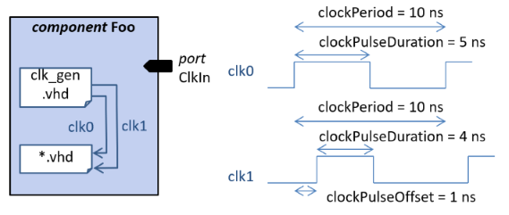

Other clock drivers-editor shows the clocks within the component that are not directly associated with a top-level port. This kind of clocks could be i.e. virtual clocks or generated clocks.
The clock river has 5 mandatory parameters such as name. Clock source is optional and defines the physical path and name of the clock generation cell. E.g. a component instantiated in VHDL and its output, like 'i_clkGen/clk1'. The waveform of the clock signal has 4 parameters. Time units are either ps (picosecond) or ns (nanosecond).
Clock period defines the length of one cycle of clock
pulse, e.g. 10 ns. Pulse offset describes the time delay
from start of the cycle to the first transition. Pulse
value defines the logic value which the first transition is
made to, either 0 or 1. Pulse duration specifies how long
the value defined in pulse value is held, e.g. 5 ns.

Other clock drivers editor provides a context menu (right mouse button) with the following options: